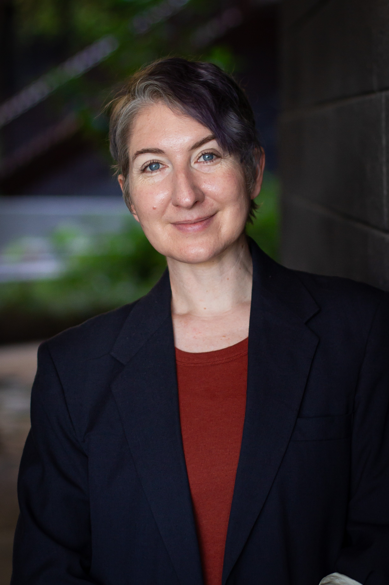
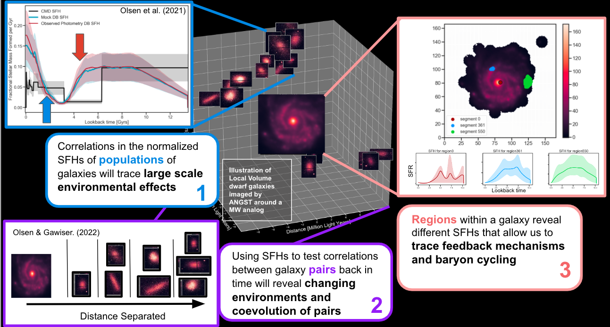

About Me

About Me:
Snooping around in the private lives of galaxies has been a desire of mine for as long as I've known that the universe was home
to more than just the Milky Way. The pursuit of this passion was put on hold when at 15 I found myself needing to focus on a more
immediate desire of escaping houselessness and putting a roof over my head. During this period of my life I had many adventures --
including playing in bands, pretending to be an artist, and falling in love.
My return to school was well timed.
There have been many advances in our understanding of how galaxies form and evolve over the last several years.
With these advances come new techniques which allow us to reconstruct what a galaxy has been up to with nothing but the light we observe.
It's beyond thrilling to get to contribute to this body of work.
My specialization lies in looking at the environmental dependence of star formation in galaxies based on their star formation histories.
I'm particularly interested in the temporal and spatial relationship of star formation within galaxies in spatially resolved observations,
as well as between galaxies that are in groups or pairs.
Education:
2023 -- Rutgers University -- Ph.D. Physics and Astronomy
2020 -- Rutgers University -- M.S. Physics and Astronomy
2017 -- Cal Poly Humboldy -- B.S. Physics, Math Minor
2014 -- College of the Redwoods -- A.A. in Science
Publications: ORC ID
Research

My research traces how galaxies build up their stellar mass over time, and how much
of that story is written by their surrounding environment. Most of this work centers
on reconstructing star formation histories (SFHs) — timelines
of when and how fast a galaxy formed its stars — and using them as a clock for
reading galaxy evolution.
Validating the method. My first paper (Olsen et al. 2021, ApJ)
compared two independent ways of reconstructing SFHs — color-magnitude diagrams
and spectral energy distribution (SED) fitting — using Local Volume dwarf
galaxies close enough to resolve individual stars. The two methods agreed well, and
in the process we discovered something unexpected: galaxies separated by great
distances showed synchronized bursts and dips in star formation at the same
cosmic epochs.
Environment and conformity. The follow-up (Olsen & Gawiser 2023,
ApJ) asked whether that synchronized star formation was linked to galactic
conformity — the tendency of galaxies near a common center to share similar
properties. We found conformity in a different subset of galaxies than the ones
showing synchronization, suggesting the two phenomena trace different physical
drivers, and that the conformity signal itself depends on the geometry of the volume
being studied.
Going spatially resolved. Using UVCANDELS imaging, I extended this
approach from whole galaxies to regions within galaxies, reconstructing
spatially resolved SFHs to search for the earliest internal signs of quenching and to
track how the resolved star-formation–stellar-mass relation evolves over the
past several billion years (Olsen et al., ApJ 2026).
Testing the reliability of resolved SFHs. My newest paper,
“Beyond the Blur: Radial Binning Trumps Stellar Migration in Resolved Star
Formation Histories” (submitted to ApJ, October 2026), uses simulations to ask a
hard question about that method: how much does stellar migration blur or bias a
resolved SFH? The result is reassuring — radial profiles built from past SFHs
hold up well and remain a trustworthy probe, even accounting for stars moving around
within a galaxy over time.
Cosmic web and structure. Alongside this, I’ve contributed to
work connecting galaxy evolution to large-scale structure — including mock
lightcone catalogs built for the CANDELS survey (Somerville et al. 2021), a
study of how low mass galaxy SFHs are affected by nearby cosmic filaments in the
New Horizon simulation, and a 2026 study showing how gas streams in the cosmic web
shape planes of satellite galaxies (“Zippers and Twisters”).
Looking ahead to LSST. All of this — dwarf galaxies,
environment, resolved SFHs — is aimed at the Rubin Observatory’s Legacy
Survey of Space and Time (LSST), which will let us trace how the smallest, faintest
galaxies grow in step with the cosmic web around them, at a scale no survey has
offered before.
Recent Work
Beyond the Blur: Radial Binning Trumps Stellar Migration in Resolved Star Formation Histories
Submitted to ApJ, October 2026
Using simulations, this paper quantifies how much stellar migration biases spatially
resolved star formation histories — and finds that radial profiles built from
past SFHs remain reliable and trustworthy despite that mixing.
Searching Within Galaxies for the Earliest Signs of Quenching
The Astrophysical Journal, 2026 · arXiv:2511.02828
Using spatially resolved star formation histories in UVCANDELS, this paper searches
within galaxies for the earliest signatures of quenching — tracing where and
when star formation shuts down at the sub-galactic scale.
Zippers and Twisters: Planes of Satellite Galaxies
2026, co-author
Contributing to work showing how whirling and shocking gas streams in the cosmic web
shape planes of satellite galaxies.
Teaching

Adjunct Assistant Professor, New York City College of Technology (CUNY) (2024–present)
Physics 1000 – Physics of the Universe (2025–present)
General physics for non-majors. Full course design, lectures, and instruction.
Physics 1117L – Astronomy Lab (2025)
Lab for majors and non-majors.
Physics 1433L – Introductory Mechanics Lab (2024–2025)
Algebra-based.
Physics 1441 – Introductory Mechanics Lab (Spring & Fall 2026)
Calculus-based.
Graduate Teaching, Rutgers University (2018–2020)
TA and lab instructor roles across intro mechanics labs, RU-PREP, and upper-level
grading; DELTA-P (Physics Education) and SIGMA-P (Physics Mentoring) certificates of
training.
Recognition
Awards:
Robert A. Schommer Prize, The Robert A. Schommer Prize is awarded to the one student
who, in the collective judgment of the astrophysics faculty in the Department, has published
the best first-author, refereed journal article in the field of astrophysics in the past two years
Chambliss Astronomy Achievement Student Awards, AAS 238, The Astronomy Achievement Student
Awards are given to recognize exemplary research by undergraduate and graduate students who present at one
of the poster sessions at the meetings of the AAS,
Rutgers Graduate Student Association Award for Excellence in Graduate Service, Recognizes
a Rutgers University graduate student who demonstrates a tireless track record of service. Those honored
have shown a selfless commitment to the betterment of their cohort, fellow graduate students, and/or the
community as a whole, improving the livelihood of others while encouraging an environment of inclusivity
and growth,
Cal Poly Humboldt Physics and Astronomy Department Award for Outstanding Service to
the Physics & Astronomy Community, Inaugural award given to the graduating student that according
to the department demonstrated exceptional leadership and mentorship..
John Mather Nobel Scholar, The John Mather Nobel Scholarship Program awards travel allowances
towards the cost of presenting research papers at professional conferences. Applicants must have demonstrated
high academic achievement, and be currently holding a Goddard-based research internship
Comap MCM Math Modeling Competition, Honorable Mention, COMAP Mathematical Contest in
Modeling (MCM) challenges teams of students to clarify, analyze, and propose solutions to open-ended
problems. The contest attracts diverse students and faculty advisors from over 900 institutions around the
world.
Grants and Fellowships:
LSST DA Catalyst Fellowship (2023–2026) The Catalyst Fellowship is a four year
prize postdoctoral fellowship thatworks towards making Rubin LSST science globally
and equitably accessible to fulfill Rubin’s twin promises of breaking scientific barriers
and furthering human knowledge. Within this context, the LSSTC Catalyst Fellowship Program seeks
early-career researchers who aspire not only to conduct their own cutting-edge scientific research,
but also to contribute to the program’s lasting legacy by building networks, learning and sharing skills,
and cultivating practices that enable science with big data.
Noemie Koller Endowed Graduate Scholarship, The Noemie Koller Endowed Scholarship in the
Department of Physics and Astronomy has been established with a gift from Prof. Koller. This
gift was made based on her appreciation of the importance of financial assistance in attracting the
best graduate students. The intent is to assist individual students and the department as a whole.
AAS FAMOUS Travel Grant, The FAMOUS (Funds for Astronomical Meetings: Outreach to Underrepresented Scientists) Travel Grants Program awards money to attend an AAS meeting.
Henry C. Torrey Fellowship, The Torrey award is awarded by the Physics & Astronomy department to
the most outstanding entering graduate students..
Rutgers Excellence Fellowship for doctoral study in Physics and Astronomy, The Rutgers Excellence Fellowship is awarded by the School of Graduate Studies (SGS) to outstanding students entering
doctoral study at Rutgers .
Mentoring
Research Mentees
Ena Chia (2024–) — using resolved SFHs to constrain stellar migration and mixing in Milky Way–type galaxies
Samiya Shamsur (2024–) — connecting morphology to environment in LSST
Sarah Draves (2024–) — finding filaments in LSST data (co-mentored with Charlotte Welker)
Manuel Ramirez (2023–2025) — investigating dwarf-hosting cosmic filaments (co-mentored with Charlotte Welker)
Career & Peer Mentoring
Career mentor, CUNY MS program (Thyra Eysselinck)
Grad peer mentor since 2017 — six junior grad students mentored
Helped run CCA/AMNH mentor training (2025) for mentors of summer students from CCA, AMNH, Columbia, and CUNY
Rutgers Physics and Astronomy Near-Peer Mentorship Program mentor (2019–2022)
Interactive Galaxy Sample Visualization By Samiya Shamsur Using LSST DP0 Galaxies
Outreach, Media, & Public Engagement
Media Engagement
“How researchers navigate a PhD later in life”
— Nature, June 2024. Interviewed for this piece.
“How Scientifically Accurate Is ‘Project Hail Mary’?”
— The New York Times, April 2026. Interviewed for an arts-section piece on the film’s scientific accuracy.
“Black Holes Colliding, with Dr. Charlotte Olsen”
— The Liuniverse Podcast, November 2025. Interview about her research and a discussion of black holes.
Astronomy on Tap NYC, June 2025 — “Is Space Gay? And the Need for Gay Spaces,” public talk for Pride month.
The Astro Show (Wyoming Stargazing), August 2022 — Guest speaker segment.
Assigned Scientist at Bachelors (ASAB) Podcast, January 2022 — Special guest episode on career path, identity, and science.
The Tundra: Beyond Space video podcast, June 2021 — Special guest.
Astrobites, July 2021 — “Queer Astronomy,” Pt. 1 & 2.
Press release: “36 Dwarf Galaxies Had Simultaneous ‘Baby Boom’ of New Stars”, May 2021 — picked up by Sky & Telescope, translated into multiple languages.
Telescope night at the Clarence Dillon Public Library, November 2022 — taught families to use the library’s new telescope.
Community Engagement
Outreach, professional service, and teaching are as necessary to being an astronomer
as research, and this work is arguably much more important. I think it crucial that our
legacies as scientists be measured more by those we bring into the field than our h-index or
publication counts. As a member of the queer community and a nonbinary scientist, my positionality
within my discipline has often informed my decisions with regards to mentoring, outreach, service, and pedagogy.
This is an area I'm particularly eager to keep developing.
AAS SGMA Committee Member, The AAS Committee for Sexual-Orientation and Gender Minorities
in Astronomy (SGMA) works to promote equality for sexual-orientation and gender minorities (SGMs) within
our profession, including those identifying as lesbian, gay, bisexual, transgender, intersex, questioning or
queer, or asexual. SGMA works to end hiring and workplace discrimination on the basis of sexual orientation
and gender identity or expression; eliminate the inequalities in compensation experienced by SGMs; create a
professional climate that respects and values diversity; serve as a conduit for communication between the
AAS Council and the SGM community; support networking and peer mentoring among SGMs; and provide
resources to support SGM equality within the astronomical profession.
Graduate Studies and Life Committee Member, The GSLC is a departmental committee made of the
Graduate Program Director, and two graduate students. Its purpose is to supervise the operation of the
graduate program, including advising graduate students, considering complaints, problems, and suggestions,
recommending changes in the program, and recommending changes in the status of individual students.
Graduate Co-Chair of Rutgers University Women in Physics and Astronomy group (RUWIPA), Organized weekly meetings and meeting topics.
Graduate Co-Chair of Rutgers University Minorities in Physics and Astronomy group (RUMIPA), Following in the footsteps of RU-WIPA, RU-MIPA was created to replace RU-MIPA and be more
inclusive of all people who are underrepresented in physics.
Physics and Astronomy Graduate Student Organization Co-President, Implemented a Near-Peer
mentorship program where each incoming student is paired with a more advanced graduate student to help
them navigate everything from housing to exam stress. Helped to establish an orientation. Held events to
create an atmosphere of community care.
Member of the Rutgers Graduate Student Association Mental Health Committee, Addressed
mental health struggles for grad students across all disciplines through events, outreach, and awareness
campaigns.
Rutgers PreDoctoral Leadership Development Academy Fellow, The PreDoctoral Leadership Development Academy (PLDA), is a one year program designed to provide doctoral students from a broad array
of academic disciplines with the supplemental knowledge and skills needed for academic and administrative
leadership roles. PLDA Fellows have an opportunity to develop a deeper understanding of the challenges confronting higher education, foster engagement with university strategy, enhance their leadership competencies,
and strengthen their network of colleagues, https://ol.rutgers.edu/programs/plda/.
Graduate Student Physics Department Union Representative, Grad student representative for the
AAUP-AFT for Rutgers. This position requires participation in the contract bargaining process, as well as
communicating union business to the other graduate students in the department. Most importantly, my role
allows for me to communicate the needs of the Physics & Astronomy graduate students to our union.
Outreach to New Brunswick Magnet Health Sciences High School, Co-organized monthly engagements with high school physics classes where we use physics demos to create experiential learning opportunities
tuned to the curriculum.
Outreach to New Brunswick Middle School through Nature thru Nurture (NtN) After School
Program, Brought physics demos relating to current physics curriculum for students in the program.
Outreach to Continuation and Community Schools, Visited local continuation and community schools
to show by example that students in alternative High Schools can still be academically successful.
Organizer for the Astronomy group weekly Journal Club, Found and arranged for graduate student hosts, paper presentations, and research talks for both faculty and students as well as facilitating lively
discussion about the latest papers in the field.
Contact
Email: charlotte.olsen47@citytech.cuny.edu